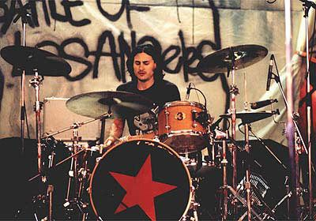

Biografias de los integrantes de la banda
Zacharias Manuel de la Rocha (Zack de la Rocha, vocalista)
Zacharias Manuel de la Rocha (Long Beach, California, Estados Unidos, 12 de enero de 1970), más conocido como Zack de la Rocha, es un músico, poeta y activista estadounidense. Es conocido por ser el vocalista y compositor de la banda de rap metal y metal alternativo Rage Against the Machine.

Carrera musical
Zack de la Rocha, guitarrista de Hardstance y miembro de Inside Out, lanzó el influyente 7" «No Spiritual Surrender» en 1990. Con Inside Out, Zack canalizó su ira y se alejó de la sociedad. En 1991, se unió a Tom Morello para formar Rage Against the Machine, logrando gran fama con su álbum debut homónimo. Durante su carrera, Zack se involucró en causas sociales, como el Ejército Zapatista, organizando visitas a Chiapas.
Rage Against the Machine se reunió en 2007, tocando en varios festivales, y realizó una exitosa gira por Australia y Europa en 2008. En 2010, la banda hizo una mini-gira por Sudamérica, destacando su presentación en Santiago de Chile. En 2010, Zack confirmó la producción de un nuevo álbum.
En 2019, la banda se reunió nuevamente, publicando una foto de las manifestaciones en Chile y anunciando conciertos en EE. UU., incluyendo Coachella. Sin embargo, la gira fue pospuesta por la pandemia y finalmente se reprogramó para 2021.
Tom Morello (guitarrista)

Tom Morello, nacido el 30 de mayo de 1964 en Nueva York, es un influyente guitarrista, compositor y activista estadounidense. Creció en una familia con un fuerte sentido de la justicia social; su madre, una exactivista, y su padre, un líder en el movimiento por los derechos civiles, influyeron en su perspectiva política.
Morello ganó prominencia en los años 90 como miembro de Rage Against the Machine, una banda que fusionó rock y rap con letras críticas hacia el sistema político y social. Su innovador estilo de guitarra, que incorpora técnicas poco convencionales y efectos de sonido únicos, se convirtió en su sello distintivo. Con Rage, lanzó varios álbumes icónicos, incluyendo su disco homónimo y «Evil Empire», que resonaron profundamente en la cultura juvenil de la época.
Tras la disolución de Rage Against the Machine, Morello formó Audioslave, junto a Chris Cornell y otros músicos, explorando un sonido más rockero y melódico. La banda disfrutó de gran éxito con álbumes como su disco debut y «Out of Exile».
Además de su trabajo con estas bandas, Morello ha desarrollado su proyecto en solitario, The Nightwatchman, donde utiliza un enfoque más acústico y folk para abordar temas políticos y sociales. También ha colaborado con numerosos artistas y ha participado en iniciativas benéficas, mostrando su compromiso con la justicia social y los derechos humanos.
A lo largo de su carrera, Tom Morello ha sido un defensor activo de diversas causas, incluyendo el movimiento por los derechos de los trabajadores y la lucha contra la desigualdad económica. Su impacto en la música y su activismo lo han consolidado como una figura emblemática en la intersección del arte y la política.
Brad Wilk (baterista)

Brad Wilk, nacido el 5 de septiembre de 1969 en Oregón, es un destacado baterista estadounidense, conocido por su trabajo con bandas icónicas como Rage Against the Machine y Audioslave. Desde joven, mostró interés por la música y comenzó a tocar la batería a los 13 años, influenciado por géneros que van desde el rock hasta el funk.
Wilk ganó reconocimiento como miembro de Rage Against the Machine, donde su poderoso estilo de batería y su habilidad para fusionar ritmos agresivos con grooves complejos contribuyeron al sonido distintivo de la banda. Participó en la grabación de álbumes emblemáticos, como su disco homónimo y «Evil Empire», que se convirtieron en himnos de la resistencia política en los años 90.
Después de la disolución de Rage, Wilk se unió a Audioslave, la banda que incluía a Chris Cornell y Tom Morello. Con Audioslave, lanzó varios álbumes exitosos, consolidando su reputación como uno de los mejores bateristas de su generación.
A lo largo de su carrera, Brad Wilk ha trabajado con varios artistas y proyectos, explorando diferentes estilos musicales. Su talento y versatilidad lo han llevado a colaborar con figuras del rock, el metal y otros géneros, manteniéndose activo en la escena musical.
Además de su carrera musical, Wilk ha estado involucrado en diversas causas sociales y benéficas, alineándose con los ideales de justicia y equidad promovidos por sus bandas. Su legado como baterista y su compromiso con causas sociales lo han establecido como una figura influyente en el mundo de la música.
Tim Commerford (bajista)

Tim Commerford, nacido el 26 de febrero de 1968 en Irvine, California, es un reconocido bajista y compositor estadounidense, famoso por su trabajo con Rage Against the Machine y Audioslave. Desde joven, Commerford mostró un interés por la música y comenzó a tocar el bajo en la adolescencia, inspirándose en géneros como el rock y el funk.
Commerford se unió a Rage Against the Machine en 1991, donde su estilo innovador y poderoso en el bajo contribuyó al sonido distintivo de la banda. Sus líneas de bajo, a menudo melódicas y rítmicas, jugaron un papel crucial en canciones emblemáticas como "Killing in the Name" y "Bulls on Parade". La banda se destacó no solo por su música, sino también por sus letras cargadas de crítica política y social, convirtiéndose en un símbolo de resistencia en los años 90.
Tras la disolución de Rage, Commerford se unió a Audioslave, donde trabajó junto a Chris Cornell y sus compañeros de Rage. Con Audioslave, lanzó varios álbumes exitosos, explorando un sonido más melódico y rockero.
Además de su carrera con estas bandas, Tim ha colaborado con otros artistas y proyectos musicales, mostrando su versatilidad como músico. También ha estado involucrado en causas sociales, utilizando su plataforma para abogar por la justicia y la equidad.
Commerford es conocido por su energía en el escenario y su enfoque único del bajo, consolidándose como uno de los bajistas más influyentes de su generación. Su legado musical y su activismo lo han establecido como una figura destacada en la escena del rock y más allá.